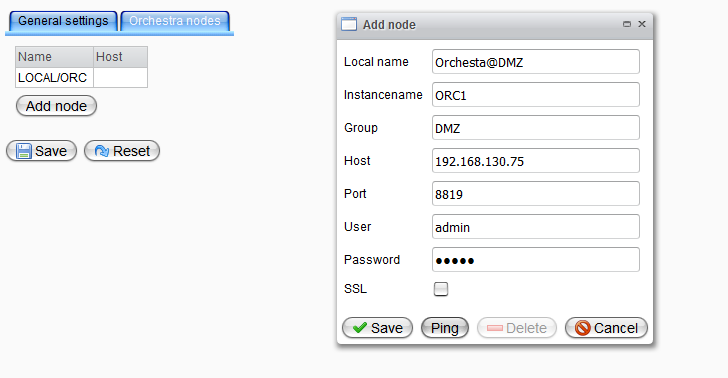

Remote Management of Cell- and Clusternodes

Topic content
Concept
Orchestra supports a remote monitoring of Orchestra nodes no matter which run mode (Standalone, Cluster or Cell) is configured for a node. So you can use almost all functions of monitoring and administration for each connected node. Just select a connected node from the select box in the left upper corner over the navigation bar and start your monitoring session.
The following quick reference guide will show you conditions and requirements as well as a progressive instruction to connect another node to your manager.
Step by Step
•Log in to your Orchestra manager an enable the user role [Remote.Administrator] for each node you want to connect (see Edit User - assign access rights)
•Select subitem Settings below Settings on the navigation bar and open Tab Orchestra nodes.
•Open the Add node dialog by clicking button [Add node] and fill the values.
•As shown on the figure below the dialog contains several elements:
 Adding a remote orchestra node |
▪Local name — display name for the remote node ▪Instancename — node name of the remote node configured at environment_settings.xml ▪Group — cell name of the remote node configured at environment_settings.xml ▪Host — hostname of the remote node configured at environment_settings.xml ▪Port — http/https port where remote node is listening - configured at environment_settings.xml ▪User — user that can access the remote node ▪Password — Associated password ▪SSL — use SSL Connection ▪Button Save — save your changes ▪Button Ping — verify your inputs ▪Button Delete — delete existing node ▪Button Cancel — discard your changes |
•By pressing the Ping button you can verify your inputs.
•Confirm your changes with pressing Save or discard them pressing Cancel.